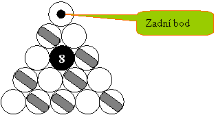
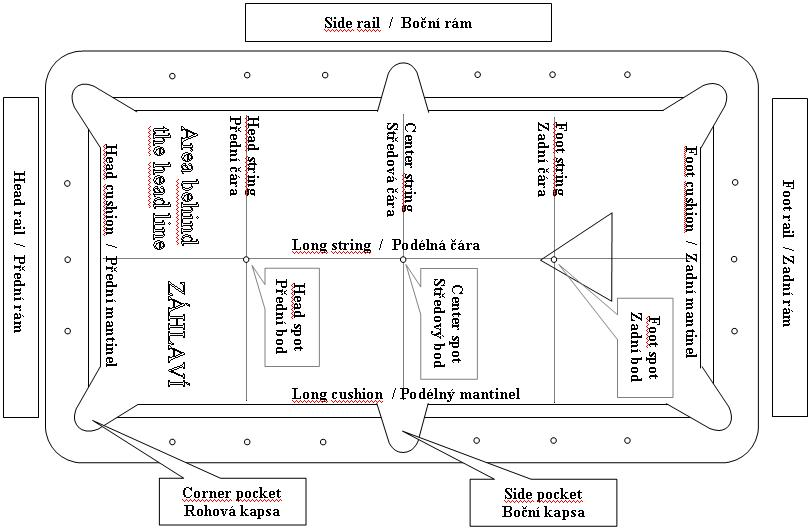

Obsah
| 1. Všeobecná pravidla |
| 2. Osmička |
| 3. Fauly |
| 4. Pravidla / směrnice pro souteže vozíčkářů |
| 5. Definice používané v pravidlech |
| Popis poolového stolu |
Poděkování
Na překladu těchto pravidel a směrnic se mnou úzce spolupracoval (zejména v oblasti použité terminologie) můj syn Marek. Výsledkem toho je řada změn v používání odborných výrazů oproti mým pgreenešlým překladům pravidel. Veřím, že to přispělo kvalitě nového překladu. Za mimořádně detailní korekturu vzniklého textu děkuji J.Lomskému, kterému se povedlo dohledat až překvapující počet překlepů, nedůsledností a opomenutí v textu pravidel. Stejný dík pak patří i M.Liebové a F.Nejedlovi za doplňující korektury textu.
Březen / červenec 2008 Ing. Vladimír Hajdovský
1. Všeobecná pravidla.
1. Všeobecná pravidla.
Následující všeobecná pravidla se vztahují na všechny discipliny, pokryté těmito pravidly, s
výjimkou přímého rozporu se specifickými pravidly discipliny. Dále směrnice pro poolový kulečník
pokrývají aspekty hry, které nejsou přímo zmíněny v pravidlech hry, jako např. specifikaci
vybavení nebo organizaci soutěží.
Discipliny poolového kulečníku se hrají na plochém stole
pokrytém suknem a ohraničeném gumovými mantinely. Hráč používá tágo k zasáhnutí bílé koule,
která následně zasahuje barevné koule. Cílem je potápět barevné koule do šesti kapes, umístěných
na hranici s mantinely. Discipliny se liší s ohledem na skutečnost, které koule jsou řádnými
cíli a jaké jsou požadavky na výhru v zápasu.
[Ediční poznámka k anglické verzi pro USA:
mužský rod se používá pro jednoduchost vyjadřování a není míněn jako určení pohlaví hráčů ani
funkcionářů. Slovo "game" se používá pro odvolání na disciplinu spíš než trojúhelník nebo
zápas.]
1.1 Odpovědnost hráče
Odpovědností hráče je znalost všech pravidel, směrnic a rozpisů použitých pro soutěž. I když turnajové orgány budou činit všechna rozumná opatření, aby takové informace byly řádně vhodnou formou dostupné všem hráčům, je konečná odpovědnost na hráčích.
1.2 Rozehrání o pořadí.
Rozehrání je prvním strkem zápasu a určuje pořadí pro hru. Hráč, který vyhraje rozehrání, rozhoduje o tom, kdo bude hrát jako první. Rozhodčí umístí kouli na každé straně stolu do záhlaví blízko přední čáře. Hráči zahrají přibližně ve stejném čase tak, aby zasáhli svou koulí zadní mantinel s cílem vrátit kouli blíž k přednímu mantinelu, než soupeř. Rozehrávací strk je chybný a nemůže vyhrát, pokud rozehraná koule:
(a) překročí podélnou čáru;
(b) kontaktuje zadní mantinel víc než jednou;
(c) je potopená nebo vyhozená ze stolu;
(d) dotkne se podélného mantinelu; nebo
(e) koule se zastaví v rámci rohové kapsy tak, že překročí linii předního mantinelu.
Navíc bude rozehrání vadné, pokud dojde k faulu na bílé, jinému než viz
3.9 Koule v pohybu.
Hráči zopakují rozehrání, pokud:
(a) rozehrávaná koule je zasažena až poté, co druhá koule již zasáhla zadní mantinel;
(b) rozhodčí není schopen určit, která z koulí se zastavila blíž k přednímu mantinelu;
(c) obě rozehrání byla vadná.
1.3 Vybavení používané hráčem
Vybavení musí odpovídat existujícím specifikacím WPA pro vybavení. Obecně hráči nemají povoleno zavádět neobvyklé vybavení do hry. Použití uvedené níže, mimo jiné, je považováno za normální. Pokud si hráč není jist konkrétním využitím vybavení, měl by to probrat s vedením turnaje před zahájením hry. Vybavení musí být používáno pouze pro účel a způsobem, k němuž bylo vybavení určeno. (viz 3.16 Nesportovní chování)
(a) Tágo - hráč je oprávněn během zápasu střídat tága, jako jsou rozstřelovací, skákací a
normální tága. Smí užívat jak zabudované, tak přídavné nástavce k prodloužení délky tága.
(b) Křída - hráč smí používat křídu na hlavičku tága, aby předcházel kiksům, a smí používat svou
vlastní křídu, pokud je její barva v souladu se suknem.
(c) Mechanické můstky (hrábě) -
hráč smí použít nejvíce dva můstky k podpoře tága během strku. Složení můstků je na hráči. Smí
použít svůj vlastní můstek, pokud je podobný můstkům standardním.
(d) Rukavice - Hráč smí
používat rukavice pro zlepšení úchopu a/nebo funkce ručního můstku.
(e) Pudr - Hráč má
povoleno užívání pudru v rozumném množství, určeném rozhodčím.
1.4 Nastavování koulí
Koule jsou nastavovány (vraceny do hry na stůl) na podélnou čáru (na dlouhou osu stolu) co nejtěsněji k zadnímu bodu a mezi zadní bod a zadní mantinel, a to bez pohnutí překážejících koulí. Když vracená koule nemůže být nastavena na zadní bod, měla by být nastavena do kontaktu (je-li to možné) s příslušnou překážející koulí. Pokud však bude bílá koule sousedem nastavené koule, neměla by být koule nastavena do kontaktu s bílou; malá mezera musí být zachována. Je-li celá podélná čára až k zadnímu mantinelu blokována jinými koulemi, nastaví se koule před zadní bod co nejtěsněji k němu.
1.5 Hra z ruky.
Při hře z ruky smí hráč umístit bílou kouli kamkoliv na hrací plochu ( viz 5.1 Součásti stolu) a smí pokračovat v přemisťování koule,
dokud neuskuteční strk (5.2 Strk). Hráči mohou použít
libovolnou část tága k přemisťování koule, včetně hlavičky tága, avšak bez pohybu pro dopředný
úder. V některých hrách a pro většinu rozstřelů může být umístění omezeno na záhlaví v
závislosti na pravidlech hry. Pak mohou vzniknout fauly 3.10
Vadné umístění bílé
a
viz 3.11 Vadná hra ze záhlaví
.
Zahrává-li hráč z ruky v záhlaví a všechny legální cílové koule se nacházejí v záhlaví, smí
požádat, aby legální cílová koule, která se nachází nejblíž k přední čáře, byla přemístěna k
zadnímu bodu (viz 1.4). Pokud dvě nebo více
koulí jsou ve stejné vzdálenosti od přední čáry, může hráč určit, která z nich má být takto
přemístěna. Cílová koule, stojící přímo na přední čáře, je hratelná.
1.6 Řádný hlášený strk
Ve hrách, v nichž je hráč povinen hlásit strky, musí být pro každý strk ohlášena zamýšlená koule
a kapsa, pokud to není zřejmé. Podrobnosti strku, jako zásahy mantinelů nebo jiné kontaktované
nebo i potopené koule nehrají roli. Pro jeden strk lze ohlásit pouze jedinou kouli.
Pro
započítání hlášené koule musí být rozhodčí přesvědčený, že byl zahrán zamýšlený strk. Pokud by
tedy byla možnost záměny, např. při hraní přes mantinel, kombinace nebo podobného strku, hráč na
strku by měl kouli a kapsu hlásit. Je-li rozhodčí nebo soupeř na pochybách, jaký strk má být
zahrán, měl by požádat o nahlášení strku.
Ve hlášených hrách může hráč na strku ohlásit
"jistotu" místo koule a kapsy a pak po strku předat hru soupeři. Zda budou koule po jistotě
vraceny na stůl, záleží na pravidlech konkrétní hry.
1.7 Sednutí koulí
Koule si může drobně sednout poté, co se zdá, že se již zastavila, nejspíš v důsledku drobných nepřesností koule nebo stolu. Pokud to nevyvolá spadnutí koule do kapsy, je to pokládáno za běžné riziko hry a koule se nepřemisťuje zpět. Pokud koule spadne do kapsy v důsledku takového sednutí, pak je tato navrácena co nejpřesněji do své původní pozice. Pokud si koule sedne do kapsy během nebo těsně před zahráním strku, a má to vliv na strk, rozhodčí obnoví pozici a strk se zopakuje. Hráč na strku není potrestán za strk v okamžiku sednutí koule (viz také 5.3 Potopené koule).
1.8 Obnova pozice
Je-li nezbytné obnovit pozici koulí nebo je očistit, rozhodčí umístí posunuté koule do jejich původních pozic podle svých nejlepších schopností. Hráči jsou povinni akceptovat rozhodnutí rozhodčího o umístění.
1.9 Vnější rušení
Pokud se během strku vyskytne vnější rušení, které má vliv na výsledek tohoto strku, rozhodčí obnoví postavení koulí před strkem a strk se zopakuje. Pokud rušení nemělo vliv na strk, rozhodčí přenastaví zasažené koule a hra pokračuje. Pokud koule nelze nastavit do jejich původních pozic, situace se vyhodnotí jako pat.
1.10 Vyžádání rozhodnutí a pravidla protestu
Pokud má hráč pocit, že se rozhodčí dopustil chyby při rozhodování, může rozhodčího požádat, aby přehodnotil své rozhodnutí nebo nevyhlášení rozhodnutí, ale rozhodnutí rozhodčího jsou konečná. Přesto, pokud má hráč pocit, že rozhodčí neuplatňuje pravidla správně, může požádat o rozhodnutí stanovenou odvolací autoritu. Rozhodčí přeruší hru, dokud odvolání probíhá (viz také část (d) pravidla 3.16 Nesportovní chování). Fauly musejí být hlášeny bezprostředně ( viz 3. Fauly).
1.11 Odstoupení
Když hráč odstoupí, ztrácí zápas. Například, když hráč rozšroubuje své sešroubované hrací tágo v době, kdy je soupeř u stolu a během soupeřovy rozhodující hry v zápase, bude to pokládáno za odstoupení ze zápasu.
1.12 Pat
Pokud rozhodčí shledá, že není dosahováno žádného pokroku směrem k výsledku, vyhlásí své rozhodnutí a každý z hráčů dostane tři další náběhy u stolu. Pak, pokud rozhodčí usoudí, že stále nedošlo k pokroku, oznámí pat. Pokud souhlasí oba hráči, může být pat vyhlášen i bez odehrání tří dodatečných náběhů. Procedura pro pat je specifikována v pravidlech jednotlivých her.
2. Osmička
Osmička se hraje s patnácti číslovanými barevnými koulemi a s jednou bílou koulí. Skupina sedmi koulí, patřících hráči na strku (číslovaných od jedné do sedmi, případně od devíti do patnácti) musí být kompletně odehrána ze stolu před pokusem o výhru potopením koule č.8. Strky jsou hlášené.
2.1 Stanovení prvního rozstřelu
Hráč, který vyhrál rozehrání, určí, kdo má provést první rozstřel ( 1.2 Rozehrání o pořadí). Standardním formátem je střídavý rozstřel, viz ovšem Směrnice 15, Následné rozstřely.
3.2 Stavění koulí pro osmičku
Patnáct barevných koulí se staví co nejtěsněji k sobě v trojúhelníku, s čelní koulí na zadním bodu a s koulí č.8 jako první, která leží přímo pod čelní koulí. Jedna z každé skupiny sedmi koulí obsadí dva spodní rohy trojúhelníku. Ostatní koule jsou do trojúhelníku umístěny bez účelového nebo záměrného rozmístění.

2.3 Rozstřel
Pro rozstřel platí následující pravidla:
(a) Bílá se rozehrává z ruky v záhlaví;
(b) Nehlásí se žádná koule a bílá nemusí zasáhnout žádnou stanovenou barevnou kouli jako první;
(c) Když rozstřelující hráč potopí kouli, aniž by fauloval, pokračuje na stole, přičemž stůl
zůstává otevřený (3.4 Otevřený stůl / výběr skupiny);
(d) Pokud nebyla potopena žádná barevná koule, nejméně čtyři barevné musí narazit na jeden nebo
více mantinelů; jinak jde o vadný rozstřel a střídající hráč má na výběr:
(1) akceptovat stůl v pozici,
(2) obnovit nastavení a provést nový rozstřel,
(3) obnovit nastavení pro rozstřel a dovolit chybujícímu hráči nový rozstřel;
(e) Potopení koule č.8 při řádném rozstřelu není faulem. Pokud je koule č.8 potopena,
rozstřelující hráč má na výběr:
(1) vrátit kouli č.8 k zadnímu bodu a akceptovat koule v pozici,
(2) provést nový rozstřel;
(f) Pokud rozstřelující hráč potopí současně s koulí č.8 i bílou (
viz definice
5.6 Potopení bílé), má soupeř na výběr:
(1) vrátit kouli č.8 k zadnímu bodu a rozehrát bílou z ruky v záhlaví,
(2) provést nový rozstřel;
(g) Pokud je při rozstřelu některá z barevných koulí vyražena ze stolu, jde o faul. Takové koule
zůstávají ze hry (s výjimkou koule č.8, která se vrací k zadnímu bodu). Střídající hráč má na
výběr:
(1) akceptovat pozici na stole,
(2) rozehrát bílou z ruky v záhlaví;
(h) Pokud rozstřelující hráč fauluje výše neuvedeným způsobem, střídající hráč má na výběr:
(1) akceptovat pozici na stole,
(2) rozehrát bílou z ruky v záhlaví.
2.4 Otevřený stůl / výběr skupiny
Před výběrem skupiny se stůl označuje jako otevřený a hráč na strku je povinen před každým strkem ohlásit zamýšlenou kouli. Pokud hráč tuto kouli řádně potopí, odpovídající skupina se stane jeho a soupeři je přidělena opačná skupina. Pokud hlášenou kouli nedokáže řádně potopit, stůl zůstává otevřený a hra přechází na soupeře. Při otevřeném stole může být jako první zasažena libovolná barevná koule s výjimkou koule č.8.
2.5 Pokračování hry
Hráč zůstává na strku tak dlouho, dokud pokračuje v řádném potápění hlášených koulí nebo dokud nevyhraje hru potopením koule č.8.
2.6 Povinně hlášené strky
Každý strk s výjimkou rozstřelu musí být hlášený, jak je vysvětleno v 1.6 Řádný hlášený strk. Koule č.8 může být ohlášena teprve po vyklizení stolu od celé skupiny koulí hráče na strku. Hráč na strku smí ohlásit "jistotu", v důsledku čehož po strku hra přechází na soupeře a koule, potopené při jistotě, zůstávají v kapsách (5.17 Strk na jistotu).
2.7 Nastavování koulí
Pokud je při rozstřelu koule č.8 potopena nebo vyražena ze stolu, je navrácena k zadnímu bodu nebo se koule nastaví pro nový rozstřel (3.3 Rozstřel a 1.4 Nastavování koulí). Žádné jiné koule se na stůl nevracejí.
2.8 Ztráta hry
Hráč na strku ztrácí hru, když:
(a) dopustí se faulu při potápění koule č.8,
(b) potopí kouli č.8 dřív, než je uklizena celá jeho skupina,
(c) potopí kouli č.8 do nehlášené kapsy,
(d) vyrazí kouli č.8 ze stolu.
Tyto případy se nevztahují na rozstřel (3.3 Rozstřel).
2.9 Běžné fauly
Pokud se hráč na strku dopustí faulu, hra přechází na jeho soupeře. Střídající hráč rozehrává z
ruky a bílou může umístit kamkoliv na hrací plochu (viz
1.5 Hra z ruky). Za běžné jsou při osmičce pokládány
následující fauly:
3.1 Potopení nebo vyražení bílé ze stolu
3.2 Chybná první koule : první koule, kterou při strku kontaktuje bílá, musí patřit do skupiny
hráče na strku s výjimkou případu, kdy je stůl otevřený (3.4
Otevřený stůl / výběr skupiny).
3.3 Bez mantinelu po kontaktu
3.4 Bez doteku nohy s podlahou
3.5 Vyražená koule ze stolu (
viz 2.7 Nastavení koulí )
3.6 Dotek koule
3.7 Dvojdotek / spící koule
3.8 Prostrk
3.9 Koule v pohybu
3.10 Vadné umístění bílé
3.11 Vadná hra ze záhlaví
3.12 Tágo na stole
3.13 Hra mimo pořadí
3.15 Pomalá hra
2.10 Závažné fauly
Fauly, vyjmenované pod 2.8 Ztráta hry jsou trestány ztrátou rozehrané hry. Pro 3.16 Nesportovní chování rozhodne rozhodčí s ohledem na povahu přestupku.
2.11 Pat
Vznikne-li pat (viz 1.12 Pat), rozstřel zopakuje hráč, který rozstřeloval původně.
3. Fauly
3. Fauly
Následující akce představují fauly, pokud jsou obsaženy ve specifických pravidlech discipliny, která se hraje. Pokud dojde v jednom strku k více faulům najednou, využije se pouze nejzávažnější z nich. Pokud faul není ohlášen dřív, než začne další strk, předpokládá se, že k faulu nedošlo.
3.1 Potopení nebo vyražení bílé ze stolu
Je-li bílá koule potopena nebo vyražena ze stolu, došlo k faulu. Viz 5.3 Potopené koule a 5.5 Vyražení koule ze stolu.
3.2 Chybná první koule
V disciplinách, které vyžadují, aby první zasaženou koulí byla určitá koule nebo jedna ze skupiny koulí, je faulem, pokud bílá zasáhne jako první jinou kouli.
3.3 Bez mantinelu po kontaktu
Pokud při strku nedojde k potopení žádné koule, bílá musí kontaktovat barevnou kouli a po tomto kontaktu musí alespoň jedna (bílá nebo jakákoliv barevná) narazit do mantinelu; jinak jde o faul (viz 5.4 Zásah mantinelu).
3.4 Bez doteku nohy s podlahou
Pokud se hráč na strku nedotýká alespoň jednou nohou podlahy v okamžiku, kdy hlavička tága kontaktuje bílou kouli, jde o faul.
3.5 Vyražená koule ze stolu
Vyražení koule ze stolu se pokládá za faul. Zda bude taková koule nastavena na stůl, záleží na pravidlech discipliny (viz 5.5 Vyražení koule ze stolu).
3.6 Dotek koule
Faulem je dotek, pohyb nebo změna dráhy libovolné barevné koule s výjimkou normálního kontaktu mezi koulemi během strku. Faulem je dotek, pohyb nebo změna dráhy bílé koule s výjimkou hry z ruky nebo normálního kontaktu mezi koulemi během strku. Hráč na strku je zodpovědný za vybavení, které užívá u stolu a které může vyvolat takový faul, jako je křída, můstky, oblečení, vlasy, části vlastního těla, dále za bílou kouli, pokud hraje z ruky. Je-li takový faul nechtěný, jde o běžný faul, pokud však je záměrný, jde o 3.16 Nesportovní chování.
3.7 Dvojdotek / spící koule
Pokud tágo při strku kontaktuje bílou kouli víc než jednou, jde o faul. Je-li bílá blízko
barevné, ale nedotýká se jí, a hlavička tága je ještě na bílé, když ta kontaktuje barevnou
kouli, jde o faul. Je-li bílá velmi blízko barevné a hráč jemně olízne tuto barevnou při strku,
předpokládá se, že nedošlo k porušení prvního ustanovení tohoto paragrafu, i kdyby se tágo
pravděpodobně dotýkalo bílé při kontaktu obou koulí.
Pokud však je bílá s barevnou v
kontaktu na počátku strku, je povoleno hrát plně nebo částečně do této koule (s podmínkou, že
tato barevná je řádným cílem v rámci pravidel hry). Pokud se taková barevná rozběhne v důsledku
tohoto strku, je chápána jako kontaktovaná bílou koulí. (I když je povoleno hrát proti
dotýkající se nebo "spící" kouli, musí se dbát o to, aby nedošlo k porušení pravidel z prvního
odstavce, pokud se v blízkosti nacházejí další koule.
Předpokládá se, že bílá není v
kontaktu s žádnou jinou koulí, pokud to neuznal rozhodčí nebo soupeř. Je v odpovědnosti hráče na
strku, aby si takové uznání před strkem vyžádal. Hraní od spící koule nesplňuje podmínku zásahu
této koule, pokud to není uvedeno v pravidlech pro konkrétní disciplinu.
3.8 Prostrk
Za faul je pokládáno, pokud kontakt hlavičky tága s bílou koulí trvá déle než při normálních strcích.
3.9 Koule v pohybu
Za faul je pokládáno, když strk začne a některá koule ve hře se ještě pohybuje nebo točí.
3.10 Vadné umístění bílé
Pokud se rozehrává z ruky s omezením na záhlaví, je faulem zahrát bílou kouli z přední čáry nebo
z místa mimo záhlaví. Není-li si hráč na strku jistý, zda byla bílá koule umístěna do záhlaví,
může požádat rozhodčího o rozhodnutí.
(Pozn. překladatele: přední čára není součástí
záhlaví)
3.11 Vadná hra ze záhlaví
Hraje-li se bílá koule z ruky v záhlaví a první koule, kterou bílá zasáhne, se nachází rovněž v
záhlaví, je strk pokládán za faul, pokud ovšem bílá před zásahem nepřešla přes přední čáru. V
případě záměrného zahrání takového faulu jde o nesportovní chování.
Bílá koule musí buď
překročit přední čáru, nebo zasáhnout barevnou kouli, stojící mimo záhlaví, jinak jde o faul a
bílou kouli rozehrává z ruky v záhlaví soupeř podle pravidel hrané discipliny.
(Pozn.
překladatele: přední čára není součástí záhlaví)
3.12 Tágo na stole
Pokud hráč na strku použije své tágo pro namíření strku tak, že ho položí na stůl, aniž by se ho dotýkal, jde o faul.
3.13 Hra mimo pořadí
Za běžný faul se pokládá neúmyslná hra mimo pořadí. Obvykle se pokračuje z pozice, která zůstala po mylném zahrání. V případě, že hráč zahrál záměrně mimo pořadí, mělo by to být pokládáno za 3.16 Nesportovní chování.
3.14 Tři navazující fauly
Pokud hráč fauluje třikrát za sebou, aniž by mezitím provedl řádný strk, jde o závažný faul. V
disciplinách, bodovaných po hrách jako je devítka, se fauly musejí odehrát ve stejné hře.
Některé discipliny jako je osmička toto pravidlo nezahrnují.
Rozhodčí musí varovat hráče,
který se dvěma fauly přichází ke stolu, že má dva fauly. V opačném případě bude možný třetí faul
pokládán pouze za druhý.
3.15 Pomalá hra
Pokud má rozhodčí pocit, že hráč hraje příliš pomalu, může doporučit hráči urychlení jeho hry. Pokud hráč nezrychlí, rozhodčí může pro tento zápas vyhlásit měření času strku, které se pak používá vůči oběma hráčům. Pokud hráč na strku překročí časový limit, stanovený pro turnaj, je ohlášen běžný faul a střídající hráč je odměněn v souladu s pravidly používanými pro hranou disciplinu (může být použito i pravidlo 3.16 Nesportovní chování).
3.16 Nesportovní chování
Normální trest za nesportovní chování je stejný jako za závažné fauly, ale rozhodčí může vyhlásit
trest podle vlastního posouzení přestupku. K možným trestům patří varování; potrestání běžným
faulem, který se započte do třífaulového pravidla tam, kde je aplikováno; trest za závažný faul;
ztráta hry, sady nebo zápasu; vyloučení ze soutěže s možným odebráním všech cen, trofejí a
klasifikačních bodů. Nesportovní chování je každé záměrné jednání, které přináší znevážení
sportu nebo které narušuje či mění hru do té míry, že nemůže být vedena řádně. Sem patří
(a) rušení soupeře;
(b) měnění polohy koulí při hře jinak než strkem;
(c) záměrně podebraný strk (miscuing);
(d) pokračování ve hře po ohlášení faulu nebo po ohlášeném přerušení hry;
(e) cvičení hry během zápasu;
(f) značkování stolu;
(g) zdržování hry;
(h) nevhodné použití vybavení.
4. Pravidla / směrnice pro soutěže vozíčkářů
| 4.1 Způsobilost hráče |
| 4.2 Prohrešky, vedoucí na faul |
| 4.3 Požadavky na vozík |
4.1 Způsobilost hráče
Všichni hráči musejí mít zhoršenou pohybovou schopnost, vyžadující použití invalidního vozíku, jako je paraplegie, kvadriplegie, amputace nebo jiný viditelný handicap. V některých případech může být vyžadován lékařský posudek pro určení způsobilosti.
4.2 Prohřešky, vedoucí na faul
(a) Hráč na strku musí při provádění strku zůstat sedět (alespoň jedním bokem na sedadle nebo na
polštáři sedadla). Pokud je použit polštář, musí zůstat plochý a pokrývat rovnoměrně sedadlo
vozíku. Hráč nesmí překládat polštář na sedadle rozkročením nohou nebo protéz. Hráč na strku
nesmí sedět na kole nebo na opěradle. Bod, kde hýždě hráče na strku spočívají na sedadle nebo
polštáři, nesmí ležet výš než 27 palců / 68,5 cm od povrchu, po němž vozík pojíždí ve své
normální pracovní pozici;
(b) Hráči nesmějí mít při hraní strku chodidlo/chodidla na podlaze. Hráči nesmějí při hraní
strku používat nohy nebo protézy jako páku proti žádné součásti stolu nebo vozíku;
(c) Hráčům je povoleno užívání takových pomůcek, jako jsou nástavce tág, speciální můstky atd.
Hráčům by nemělo být pomáháno přímo při strku (i když jiná osoba může držet můstek, nesmí ovšem
pomáhat při strku do tága). Pokud hráč žádá o pomoc při pohybu kolem stolu, jiná osoba mu může
pomoci, ale nesmí se dotýkat vozíku během strku.
Výše uvedené prohřešky se posuzují jako
porušení bodu
3.16 Nesportovní chování a budou zpravidla trestány
následovně: 1.přestupek - hra z ruky pro soupeře kdekoliv na stole; 2.přestupek - ztráta
rozehrané hry; 3.přestupek - ztráta zápasu. Rozhodčí může zvolit odlišný trest v závislosti na
povaze přestupku.
4.3 Požadavky na vozík
No standing wheelchairs may be used in the standing position (Skládací vozík nesmí být použit ve složeném stavu ???). Vozík hráče by měl být čistý a v dobrém technickém stavu.
5. Definice používané v pravidlech
V těchto pravidlech se plošně používají následující definice:
5.1 Součásti stolu
Následující definice částí stolu se odvolávají na připojený diagram. Některé podrobnosti o
přesných rozměrech a umístění jsou v předpisu WPA Equipment Specification (viz stránky WPA na
www.wpa-pool.com pro aktuální informaci).
Stůl se
dělí na rám, mantinely, hrací plochu a kapsy. Zadní konec stolu je místo pro počáteční umístění
barevných koulí, přední konec je místem počáteční polohy bílé koule. Mezi předním rámem a přední
čárou se nachází plocha záhlaví. Přední čára do záhlaví nepatří. Mantinely, potahy rámu, kapsy a
jejich vložky jsou součástí rámu.
Na hrací ploše jsou čtyři čáry, jak ukazuje diagram:
- Podélná čára, procházející středem stolu,
- Přední čára, vymezující čtvrtinu stolu, blízkou přednímu rámu,
- Zadní čára, vymezující čtvrtinu stolu, blízkou zadnímu rámu,
- Středová čára mezi dvěma bočními kapsami.
Tyto čáry jsou vyznačeny pouze tak, jak je zmíněno níže.
Rám může mít vykládání nazývané
diamanty či značky, které vyznačují čtvrtiny šířky a osminy délky stolu, měřené mezi nosy
mantinelů (Poznámka překladatele: nosem mantinelu se rozumí jeho hrana, do níž narážejí koule
při styku s mantinelem.)
Na hrací ploše, která představuje rovnou, suknem potaženou část
stolu, mohou být vyznačeny další prvky, užívané hranou disciplinou:
- Zadní bod v místě protnutí zadní a podélné čáry,
- Přední bod v místě protnutí přední a podélné čáry,
- Středový bod v místě protnutí středové a podélné čáry,
- Přední čára,
- Podélná čára mezi zadním bodem a zadním mantinelem,
- Trojúhelník, buď v obrysu nebo pomocí vymezovacích značek v závislosti na disciplině
5.2 Strk
Strk začíná, když hlavička tága kontaktuje bílou kouli v důsledku dopředného pohybu tága. Strk končí, když všechny koule ve hře ukončí pohyb včetně rotace. Strk je pokládán za řádný, jestliže se při něm hráč na strku nedopustil faulu.
5.3 Potopené koule
Koule je potopená, když spadne do kapsy pod hrací plochou nebo vstoupí do návratového zařízení stolu. Koule blízko okraje kapsy, částečně podepřená jinou koulí, se pokládá za potopenou, pokud by vyjmutí podepírající koule vedlo ke spadnutí koule do kapsy. Když se koule zastaví blízko okraje kapsy a zůstane zjevně bez pohybu po dobu pěti vteřin, nebude pokládána za potopenou, pokud tam později spadne sama od sebe. Bližší podrobnosti viz 1.7 Sednutí koulí. Během této pětivteřinové doby by měl rozhodčí zajistit, aby nebyl zahrán další strk. Barevná koule, která se odrazí z kapsy zpět na hrací plochu, není potopenou koulí. Pokud bílá koule kontaktuje již potopenou kouli, bude pokládána za potopenou, ať se vrátí na stůl nebo ne. Rozhodčí má vyjímat potopené koule z plných nebo téměř plných kapes, ale zodpovědností hráče na strku je sledovat, zda je tato povinnost plněna.
5.4 Hra na mantinel
Koule je zahrána na mantinel, pokud se ho nedotýkala na začátku strku a pak se ho dotkne. Koule, která se dotýká mantinelu před strkem (tzv. spí na mantinelu) není zahraná na tento mantinel, pokud jej neopustí a zase se na něj nevrátí. Koule, která byla potopena nebo vyražena ze stolu, je rovněž posuzována jako koule zahraná na mantinel. Koule není pokládána za spící na mantinelu, dokud tak není posouzena rozhodčím nebo soupeřem. Viz rovněž Směrnici 26 Hlášení spících koulí.
5.5 Vyražení koule ze stolu
Koule je pokládána za vyraženou ze stolu, pokud skončí jinde než na hrací ploše, když nebyla potopena. Koule je rovněž pokládána za vyraženou ze stolu, i když se na hrací plochu vrátí po kontaktu s osvětlením, křídou a podobně nebo po kontaktu s hráčem. Koule, která kontaktuje vršek rámu, není pokládána za vyraženou, pokud se vrátí na hrací plochu nebo spadne do kapsy.
5.6 Scratch
(Poznámka překladatele : Pro strk, jímž je potopena bílá koule, používají originální pravidla výraz "scratch". V češtině samostatný termín pro tuto událost nevznikl a překlad pracuje přímo s opisem "potopení bílé koule".)
5.7 Bílá koule
Bílá koule je koule, kterou zasahuje hráč na počátku strku. Tato koule je tradičně bílá, ale může
být značkována logem nebo body. V poolových kulečníkových disciplinách oba hráči používají
jedinou bílou kouli.
(Poznámka překladatele:
v originálu je tato koule zásadně označována jako "cue ball"; obecně přijatelný český
ekvivalent dosud nevznikl; termín "bílá koule" je inspirován slovenským překladem pravidel.
Vzhledem k tomu, že originální text pravidel nikde nepoužívá pojem "white ball", nehrozí
nebezpečí záměny pojmů).
5.8 Barevné koule
Barevné koule jsou zasahovány bílou koulí obvykle s úmyslem zahrát je do kapes. Koule jsou
zpravidla číslovány od čísla jedna do čísla shodného s počtem koulí používaných v disciplíně.
Barvy a značení barevných kouli jsou pokryty předpisem WPA Equipment Specifications.
(Poznámka
překladatele
: v originálu jsou tyto koule téměř bez výjimky označovány jako "object balls"; opět v
důsledku neexistence lepšího českého ekvivalentu byl použit způsob označení těchto koulí podle
slovenského překladu pravidel. Žádná terminologická kolize nehrozí. Výjimečně, pokud to
srozumitelnost překladu vyžaduje, je pro "object ball" použito českého spojení "cílová koule".)
5.9 Sada
V některých utkáních může být zápas rozdělen do částí, zvaných sady a výhra určitého počtu sad podmiňuje výhru celého zápasu, přičemž určitý počet vyhraných bodů nebo her je požadován pro výhru v každé sadě.
5.10 Rámeček a trojúhelník
Rámečkem je rozuměno zařízení obvykle trojúhelníkového tvaru, používané pro uspořádání barevných
koulí pro rozstřel na začátku hry. Trojúhelníkem se rozumí oblast na stole, vymezená pro stavění
barevných koulí pro rozstřel.
(Poznámka překladatele
: v originálu je 5.10 Rack věnován zejména víceznačnosti pojmu "rack"; český překlad se
tomuto problému vyhýbá.)
5.11 Rozstřel
Rozstřel je otevírací strk zápasu nebo hry, v závislosti na disciplině. Dochází k němu, když jsou barevné koule postaveny pro zahájení hry a bílá se zahrává z ruky v záhlaví zpravidla s úmyslem rozbít zahajovací nastavení.
5.12 Náběh
Náběhem je rozuměno jedno střídání hráče u stolu. Začíná získáním práva na řádný strk a končí s koncem strku, když toto jeho právo přestane platit. V některých hrách může hráč nejít ke stolu za určité situace, kdy by hra na něj normálně přešla, a pak původní hráč zůstává u stolu a pokračuje v náběhu (např. při push-outu v devítce). Hráč, který právě hraje, se nazývá hráč na strku.
5.13 Poloha koulí
Poloha koule se stanoví jako průmět jejího středu svisle dolů na hrací plochu. O kouli se mluví jako o umístěné na čáře nebo na bodu, když se její střed nachází přímo nad zmíněnou čárou nebo bodem.
5.14 Nastavení koulí
Některé disciplíny vyžadují, aby barevné koule byly umístěny na hrací plochu jinak než při zahajovacím nastavení. Potom se jim říká nastavené koule (viz 1.4 Nastavování koulí).
5.15 Obnovení pozice
Pokud byla porušena pozice koulí, pravidla pro disciplinu mohou vyžadovat, aby byly přesunuty tam, kde byly. Rozhodčí vrátí koule do jejich původní pozice tak přesně, jak je to jen možné.
5.16 Skok
Skok je strk, při kterém bílá koule přejde nad mezilehlou překážkou jako například nad barevnou koulí nebo nad částí mantinelu. Zda je takový strk řádný, záleží na způsobu jeho provedení a na záměru hráče. Obvykle se skok hraje se zvednutým tágem do bílé koule shora proti hracímu povrchu, od nějž se pak koule odrazí.
5.17 Strk na jistotu
Strk se nazývá "jistota", hraje-li se hlášená disciplina a hráč na strku ohlásí rozhodčímu nebo soupeři před strkem, že jistotu hraje. Náběh po skončení jistoty přechází na soupeře.
5.18 Smeknutí tága
Smeknutí se vyskytne, když hlavička tága sklouzne po bílé kouli v důsledku hraní v nadměrné vzdálenosti hlavičky od středu koule nebo nedostatku křídy na hlavičce tága. To je zpravidla spojeno s ostrým zvukem a viditelným setřením křídy z hlavičky. Ačkoliv některá smeknutí vyvolají kontakt boku tága s bílou koulí, pokud tento kontakt není jasně viditelný, předpokládá se, že k němu nedošlo. Podebraný strk, při němž hlavička tága kontaktuje hrací povrch a bílá současně s tím vyskočí nad sukno, je pokládán za smeknutí. Platí, že záměrné smeknutí tága podléhá pravidlu 3.16 Nesportovní chování.
Popis poolového stolu:

Dodatek k pravidlům:
Tato pravidla z originálního znění přeložil Vladimír Hajdovský, celé znění včetně pravidel pro turnajovou hru a pravidel pro rozhodčí najdete na jeho webových stránkách http://www.sweb.cz/vladimir.haj/Pravidla/.
Za poskytnutí těchto pravidel tímto panu Hajdovskému velmi děkujeme.
Pradidlá probrána ze stránky http://www.heltakoop.cz/pravidla/pravidla-kulecniku-pool.